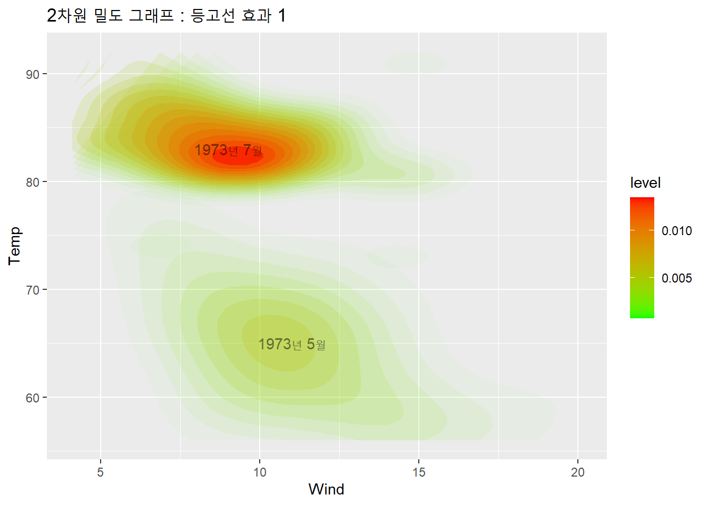

12.4 이차원 밀도 그래프
2개의 연속형 변수를 가지고 그릴 수 있는 그래프 중에 이차원 밀도 그래프 (2D Density Plot) 을 ggplot2의 stat_density2d() 함수를 이용하여 그려보겠습니다. 이차원 밀도 그래프 (2D Density Plot)은 2D 커널 밀도 추정치를 구해서 같은 추정치를 선으로 연결한 그래프 입니다. 우리가 일상 생활 중에 자주 쉽게 접하는 이차원 밀도 그래프의 예로는 지도의 등고선이나 일기예보할 때 쓰는 등압선이 있습니다.
[ 기상청 등압선 얘시 ]
* 출처: 기상청, http://www.kma.go.kr/weather/images/analysischart.jsp
12.4.1 데이터 세트
이번에 R로 예를 들 데이터는 뉴욕의 기상을 1973년 5월부터 9월까지 매일 측정한 airquality 데이터 프레임에서 5월달과 7월달 두 달의 Wind, Temp를 사용하겠습니다. (airquality는 시계열 데이터이고, 이전 포스팅에서 airquality 데이터 프레임을 사용하여 ggplot2로 시계열 그래프 그래프 그리는 법을 설명하였으니 참고하시기 바랍니다)
먼저, airquality의 데이터 구조를 살펴보고, 5월달과 7월달 데이터만 선별해서 새로운 데이터 프레임을 만들어보겠습니다.
library(ggplot2)
# airquality 구조
str(airquality)## 'data.frame': 153 obs. of 11 variables:
## $ Ozone : int 41 36 12 18 NA 28 23 19 8 NA ...
## $ Solar.R : int 190 118 149 313 NA NA 299 99 19 194 ...
## $ Wind : num 7.4 8 12.6 11.5 14.3 14.9 8.6 13.8 20.1 8.6 ...
## $ Temp : int 67 72 74 62 56 66 65 59 61 69 ...
## $ Month : Factor w/ 5 levels "5","6","7","8",..: 1 1 1 1 1 1 1 1 1 1 ...
## $ Day : int 1 2 3 4 5 6 7 8 9 10 ...
## $ Month.ch_temp: chr "5" "5" "5" "5" ...
## $ Day.ch_temp : chr "1" "2" "3" "4" ...
## $ Month.ch : chr "05" "05" "05" "05" ...
## $ Day.ch : chr "01" "02" "03" "04" ...
## $ Time : Date, format: "2021-05-01" "2021-05-02" ...# 5월과 7월만 선택
airquality_May_July <- subset(airquality,
select = c(Month, Day, Wind, Temp),
subset = (Month %in% c(5, 7)))
head(airquality_May_July)## Month Day Wind Temp
## 1 5 1 7.4 67
## 2 5 2 8.0 72
## 3 5 3 12.6 74
## 4 5 4 11.5 62
## 5 5 5 14.3 56
## 6 5 6 14.9 66tail(airquality_May_July)## Month Day Wind Temp
## 87 7 26 8.6 82
## 88 7 27 12.0 86
## 89 7 28 7.4 88
## 90 7 29 7.4 86
## 91 7 30 7.4 83
## 92 7 31 9.2 81이제 이차원 밀도 그래프 (2D Density Plot)을 그려보겠습니다. 그리고 5월과 7월달의 Month를 색깔로 구분하여 보겠습니다.
12.4.2 aes()에 범주형 변수 지정하기
이때 조심해야 할 것이 있습니다. aes() 에 shape이나 colour 에는 범주형 변수(factor)가 들어가야 합니다. 만약 연속형 변수가 들어가면 “Error: A continuous variable can not be mapped to shape” 라는 에러 메시지가 뜹니다.
# 2차원 밀도 그래프 : 모양과 색깔로 구분
# 연속형 변수라서 error
ggplot(data = airquality_May_July,
aes(x = Wind,
y = Temp,
shape = Month)) +
geom_point() +
stat_density2d() +
ggtitle("2차원 밀도 그래프 : 모양과 색깔로 구분")
Month를 Month.ch라는 새로운 문자형 변수로 변환해, 이를 사용해서 이차원 밀도 그래프를 Month별로 모양과 색깔을 구분해서 그려보겠습니다.
# Month를 문자형 변수로 변환
airquality_May_July <- transform(airquality_May_July,
Month.ch = as.character(Month))
sapply(airquality_May_July, class)## Month Day Wind Temp Month.ch
## "factor" "integer" "numeric" "integer" "character"head(airquality_May_July)## Month Day Wind Temp Month.ch
## 1 5 1 7.4 67 5
## 2 5 2 8.0 72 5
## 3 5 3 12.6 74 5
## 4 5 4 11.5 62 5
## 5 5 5 14.3 56 5
## 6 5 6 14.9 66 512.4.3 커널 밀도 추정치 계산
stat_density2d() 함수로 커널 밀도 추정치를 계산해서 2차원 밀도 그래프를 그리면,
# 2차원 밀도 그래프 : Month별 모양 구분
ggplot(data=airquality_May_July,
aes(x = Wind,
y = Temp,
shape = Month.ch)) +
geom_point(size = 4) +
stat_density2d() +
ggtitle("2차원 밀도 그래프 : Month별 모양 구분")12.4.4 라벨 추가
이번에는 (범례가 있기는 합니다만) 사용자의 가독성을 조금 더 높여주기 위해 2차원 밀도 그래프의 5월, 7월 두 집단의 중앙 부위에 “년/월”을 annotate()의 “text”로 라벨을 추가해 보겠습니다.
# 2차원 밀도 그래프 : Month별 색깔로 구분, 년/월 라벨 추가
ggplot(data=airquality_May_July,
aes(x = Wind,
y = Temp,
shape = Month.ch)) +
stat_density2d() +
ggtitle("2차원 밀도 그래프 : Month별 색깔로 구분, 년/월 라벨 추가") +
annotate("text", x=11, y=65, label="May, 1973", alpha=0.5) +
annotate("text", x=9, y= 83, label="July, 1973", alpha=0.5)12.4.5 등고선 효과 추가하기
그림이 조금 재미가 없네요… 등고선에 그래디언트 효과를 줘서 히트맵 형태로 표현을 해 보겠습니다. stat_density2d() 함수 내에 aes() 함수를 이용하여 등고선 효과를 추가합니다.
그리고, scale_fill_gradient() 함수와 scale_alpha() 함수도 추가해 줍니다.
# 2차원 밀도 그래프 : 등고선 효과
ggplot(data=airquality_May_July,
aes(x = Wind,
y = Temp,
shape = Month.ch)) +
stat_density2d(aes(
fill = ..level..,
alpha = ..level..),
size = 0.01,
bins = 20, # 등고선 간격 조절
geom = "polygon") +
scale_fill_gradient(low = "green", high = "red") +
scale_alpha(range = c(0, 0.5), guide = FALSE) +
ggtitle("2차원 밀도 그래프 : 등고선 효과") +
annotate("text", x=11, y=65, label="May, 1973", alpha=1.5, color = "blue") +
annotate("text", x=9, y= 83, label="July, 1973", alpha=1.5, color = "blue")
그래도 뭔가 불만이 있네요.. 등고선을 없애고 부드럽게 표현해 보겠습니다. ggplot() 함수 내의 colour = Month.ch을 제거하고 다시 한번 더 그려보지요…
# 2차원 밀도 그래프 : 등고선 효과
ggplot(data=airquality_May_July,
aes(x = Wind,
y = Temp)) +
stat_density2d(
aes(fill = ..level..,
alpha = ..level..),
size = 0.01,
bins = 20, # 등고선 간격 조절
geom = "polygon") +
scale_fill_gradient(low = "green", high = "red") +
scale_alpha(range = c(0, 0.5), guide = FALSE) +
ggtitle("2차원 밀도 그래프 : 등고선 효과") +
annotate("text", x=11, y=65, label="May, 1973", alpha=1.5, color = "blue") +
annotate("text", x=9, y= 83, label="July, 1973", alpha=1.5, color = "blue")참고로 aes() 함수 내의 bins는 등고선 간의 간격 갯수라고 이해하면 좋겠습니다. 간격의 갯수가 많아질수록 등고선의 간격이 좁아지겠지요…. bins의 값을 5, 10, 15, 20, 25, 30 등으로 수정하면서 다시 그려보기 바랍니다.
12.4.6 facet_wrap() 함수 이용
한번 더 해 보지요… 이번에는 앞에서 제거한 Month.ch 변수를 facet_wrap() 함수 안에 추가해서 그림을 다시 그려보겠습니다. 그러면 5월과 7월의 지도가 따로 그려지겠지요…
# 2차원 밀도 그래프 : facet_wrap() 함수 이용
ggplot(data=airquality_May_July, aes(x=Wind, y=Temp)) +
# geom_point(size=4) +
stat_density2d(
aes(fill = ..level..,
alpha = ..level..),
size = 0.01,
bins = 20, # 등고선 간격 조절
geom = "polygon") +
scale_fill_gradient(low = "green", high = "red") +
scale_alpha(range = c(0, 0.5), guide = FALSE) +
ggtitle("2D desity plot of Wind and Tmep, at1973. May/July by Colour") +
annotate("text", x=11, y=65, label="May, 1973", alpha=1.5, color = "blue") +
annotate("text", x=9, y= 83, label="July, 1973", alpha=1.5, color = "blue") +
facet_wrap(vars(Month.ch))